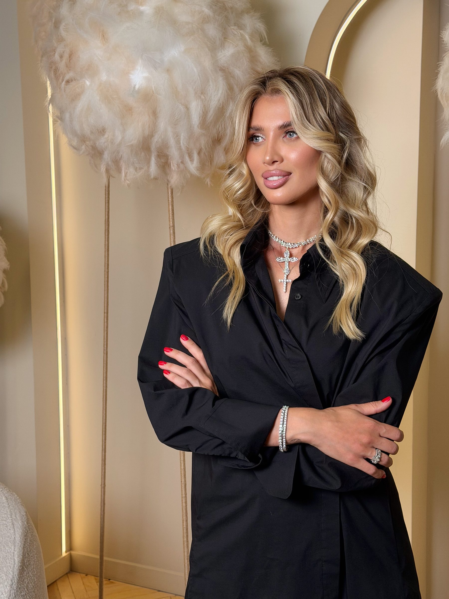
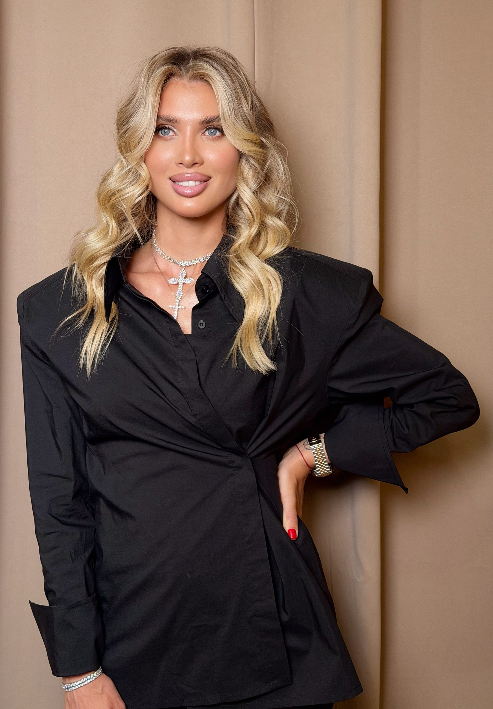
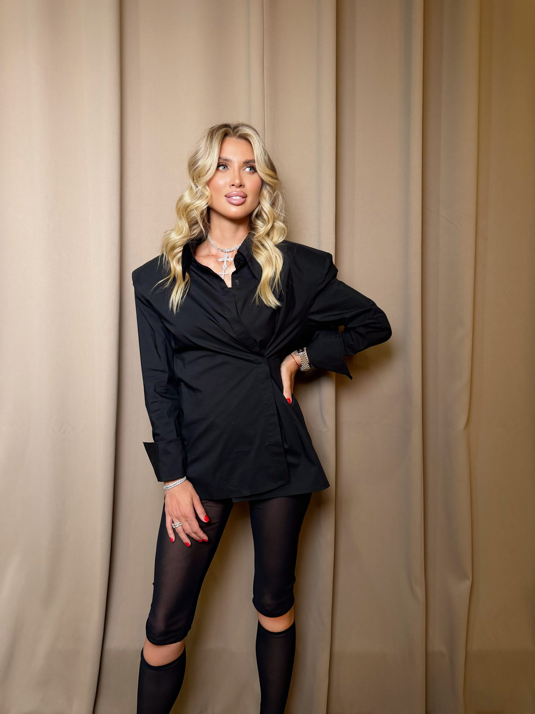
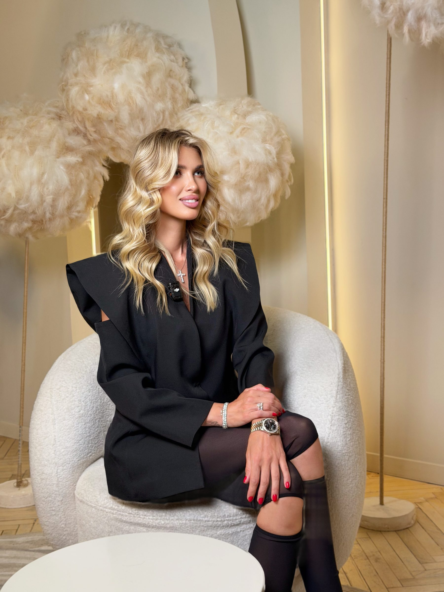

Коучинг отношений
Юля
Почему внимание мужчин ещё не семья
Здесь разберёмся, почему красивая и самостоятельная женщина может получать внимание — и всё равно не приходить к отношениям.

Знакомство
Меня зовут Юля
Я — коуч. Не психолог, а именно коуч, который помогает женщинам лучше понять себя, отношения и свои сценарии.
Здесь я мягко и честно помогу тебе посмотреть на свою жизнь глубже.
Я не буду учить тебя, как стать удобнее для мужчины.
Наша задача — понять, почему в отношениях повторяются одни и те же ситуации и что можно изменить в собственном выборе.
Главный вопрос
Почему красивые и стильные женщины часто остаются без семьи?
Часто причина не во внешности. И не в том, что с тобой что-то не так.
Просто за красотой нередко стоят сильные сценарии: быть удобной, всё тянуть на себе, выбирать недоступных и снова разочаровываться.
Внимание мужчин ещё не гарантирует отношений.
Можно нравиться, ходить на свидания и получать комплименты, но каждый раз оказываться в одной и той же неопределённости.
Узнавание
Возможно, ты узнаешь себя
- Мужчины проявляют интерес, но не делают серьёзных шагов.
- Отношения начинаются ярко, а потом остаётся неопределённость.
- Ты долго ждёшь, что мужчина изменится.
- Снаружи ты сильная, а внутри устала всё тянуть на себе.
Если откликнулся хотя бы один пункт — дело не в невезении.
Чаще всего это повторяющийся сценарий, который можно увидеть и изменить.

Суть
Красота привлекает. Но семья строится на другом.
Можно быть яркой, стильной и получать много внимания. Но внимание — это ещё не намерение. Сильные эмоции — ещё не любовь. Красивые слова — ещё не поступки.
Иногда женщина выбирает не мужчину, а надежду на то, каким он однажды станет. И снова оказывается в отношениях, у которых изначально не было будущего.
Смотри не на обещания и потенциал — а на реальные действия.
Отношения строятся не на том, каким мужчина может стать. А на том, какой он рядом с тобой уже сейчас.
Сдвиг
Тебе не нужно становиться удобнее, чтобы создать семью
Важно не стать ещё красивее, мягче или терпеливее. Важно научиться:
- — видеть намерения мужчины
- — отличать любовь от иллюзии
- — не соглашаться на неопределённость
- — выбирать того, кто действительно готов к семье
Когда меняется твой выбор, начинает меняться и сценарий отношений.
Изменения начинаются не с попытки переделать мужчину — а с понимания себя.

Курс
Я создала курс, который поможет увидеть свой сценарий
«Почему красивые и стильные женщины часто остаются без семьи?»
- — почему внимание не приводит к семье
- — каких мужчин ты выбираешь снова и снова
- — как отличать намерения от красивых слов
- — почему ты остаёшься в неопределённости
- — что изменить, чтобы выбирать по-другому
Короткие видеоуроки. Без сложной психологии и лишней воды. Чтобы ты не просто всё поняла, а начала делать другой выбор.
Это не курс о манипуляциях и не инструкция, как понравиться мужчине. Это возможность честно увидеть свой сценарий.
Почему я могу об этом говорить
Коуч и практик — не теоретик
Я не психолог. Я коуч и практик. Прошла обучение в Erickson International по программе «Искусство и наука коучинга», модули I–IV.
15 лет в браке. Двое детей. Общий бизнес с мужем.
Я знаю отношения не только из книг, но и из собственной жизни.
Моя задача — не учить тебя жить, а помочь увидеть то, что ты сама пока не замечаешь.
В основе курса — коучинговая подготовка, личный опыт и вопросы, которые помогают смотреть на себя честнее.
Стоимость
Всё, что нужно, чтобы начать менять сценарий
- — короткие видеоуроки
- — понятные разборы без лишней воды
- — вопросы для самостоятельной работы
- — доступ сразу после оплаты
- — прохождение в своём темпе
Ты получаешь не просто информацию. Ты начинаешь лучше понимать, кого выбираешь, почему остаёшься в неопределённости и что можешь изменить уже сейчас.
1 990 ₽
Оплатить и начатьДоступ открывается сразу. Уроки можно проходить в своём темпе и возвращаться к ним повторно.
Решение
Ты готова перестать повторять прежний сценарий?
Можно продолжать ждать, что в следующий раз всё будет иначе. А можно уже сейчас понять: почему ты выбираешь именно таких мужчин, почему остаёшься там, где нет определённости, и что нужно изменить, чтобы выбирать по-другому.
Иногда один честный взгляд на себя меняет гораздо больше, чем годы ожидания.
После оплаты ты сразу получишь доступ ко всем урокам курса.